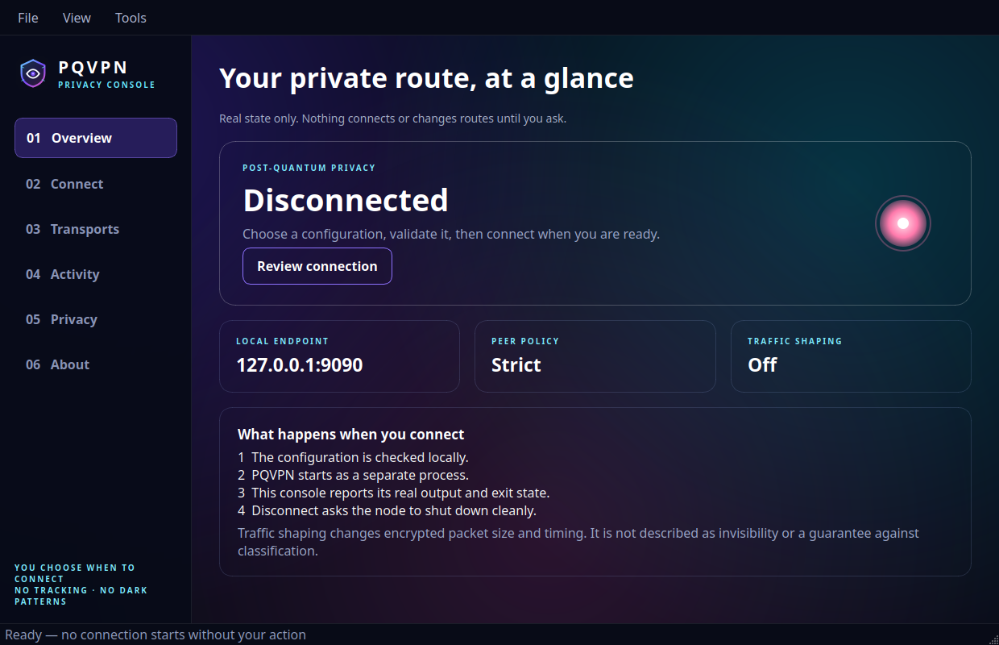

Hybrid post-quantum handshake
X25519 and ML-KEM-1024 establish secrets; Ed25519 and ML-DSA-87 authenticate the same transcript.
Experimental 0.6 beta · C++23
Build a private network between machines you control, with hybrid post-quantum identity, auditable peer discovery and native tools for desktop, terminal and automation.
Detecting your platform · all downloads remain selectable
Loading the latest published packages…
The current beta provides checksum-verified Windows x86-64 test packages. Signing and full release qualification are still in progress.
ℂ → Σg · HYBRID IDENTITY
X25519 + ML-KEM-1024
Built as a system
The GUI, CLI and TUI operate the same configuration and canonical node. No second crypto stack, no simulated status.
X25519 and ML-KEM-1024 establish secrets; Ed25519 and ML-DSA-87 authenticate the same transcript.
Authenticated onion layers move traffic through peers you selected, with replay windows and bounded parsing.
PQTP observes loss, jitter and failure thresholds, preferring UDP and applying hysteresis before lane changes.
Attach isolated engines such as udp2raw. External processes keep their own privileges, lifecycle and updates.
Linux TUN, a macOS Network Extension boundary and the PQVPN Windows NDIS tunnel use target-specific code.
Linux x86_64/ARM64, macOS Intel/Apple Silicon and Windows x86_64 must configure, compile and start before release.
Signal path
One clear path
The desktop console guides the same four steps on every platform and reports only state produced by the canonical node.
Choose a published test package and verify its checksum. Windows full-tunnel mode also requires the signed PQVPN NDIS driver.
Select a reviewed JSON configuration. The console asks pqvpn_node to parse and validate it before enabling Connect.
The node contacts a declared bootstrap endpoint and completes the hybrid handshake. “Mainnet connected” appears only after an authenticated peer session exists.
Tunnel traffic, adaptive transport and StrangeNet share that session. Activity and diagnostics stay visible, and Disconnect rolls back the managed process.
Windows tunnel boundary
The console distinguishes ready, missing and access-denied states. UDP-only mode remains an explicit connectivity test and never claims that system traffic is tunneled.
Public coordination, explicit consent
This version-controlled registry lists only operators who deliberately publish a reachable bootstrap peer. Inclusion is discovery, not endorsement, uptime or permission to abuse a node.
Automatic refresh every 60 seconds…
Loading declared peers…
Hardened operations
The dedicated bootstrap and mainnet exit run without login privileges, expose PQVPN only over UDP/9090, bound pre-authentication work, and install checksum-verified releases through atomic updaters with rollback.
A room between authenticated peers
Established PQVPN peers can share a bounded conversation room without a central chat service. Text, emoji, stickers, reactions and delivery receipts use a session-separated E2E key and authenticated sender identity.
No public history, account database or analytics endpoint.
2 KiB messages, strict UTF-8 parsing and bounded replay state keep conversation traffic predictable.
The native console includes emoji reactions and locally created encrypted stickers.
Universal fanout reaches every directly established authenticated session. Multi-hop store-and-forward remains disabled until origin-signed envelopes and abuse controls exist.
Native privacy console
The redesigned console follows Configure → Verify → Connect → Use. It exposes mainnet bootstrap state, hybrid peer readiness, the native tunnel boundary, egress, shaping, adaptive transport, StrangeNet, activity and diagnostics through the same node process.

Professional means verifiable
This beta has no independent audit. Use it for evaluation and controlled networks.
Public nodes discard protocol output and do not retain traffic, destination or DNS history. Read the scope.
Operators define access and egress policy. Privacy does not remove responsibility.
Platform support appears only after its native workflow succeeds.
Open source grows through signal
A GitHub star helps technical contributors find the project. Testing a release, reviewing the protocol and reporting reproducible results are even more useful.
Loading the public repository signal…
bc1qt6lrt8ces62pvp6ws9audr5mdhu0ht9qkga2llVerify this address in the repository before sending. Donations purchase no guarantees, influence or security assurances.
Verify its checksum, try it on a controlled system, and report the exact release, configuration and observed result.
Open releases → 02Review the security modelInspect trust boundaries, protocol code and published limitations before making or testing a claim.
Security policy → 03Make feedback actionableOpen a focused issue with reproduction steps, platform details and logs with secrets removed.
Start an issue →